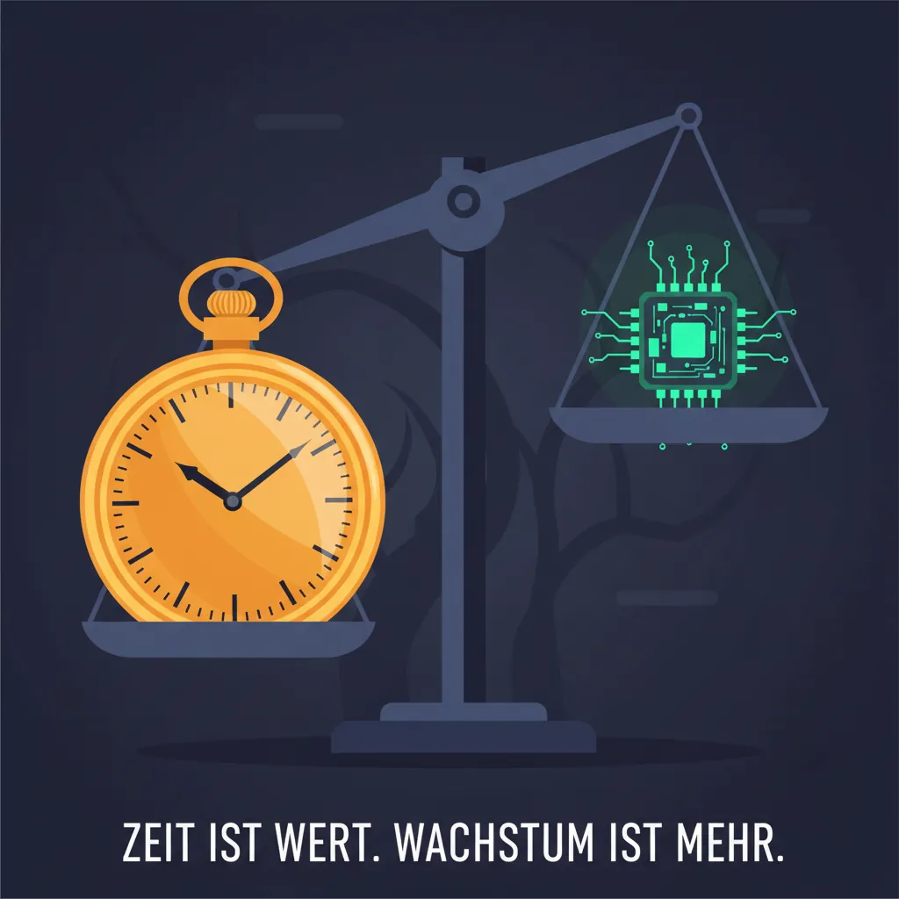
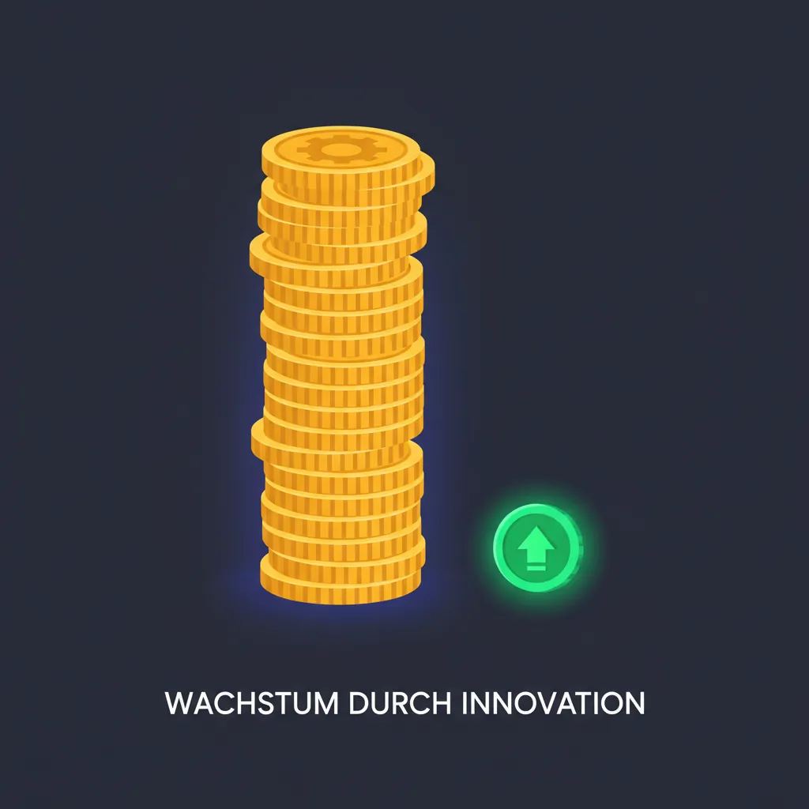
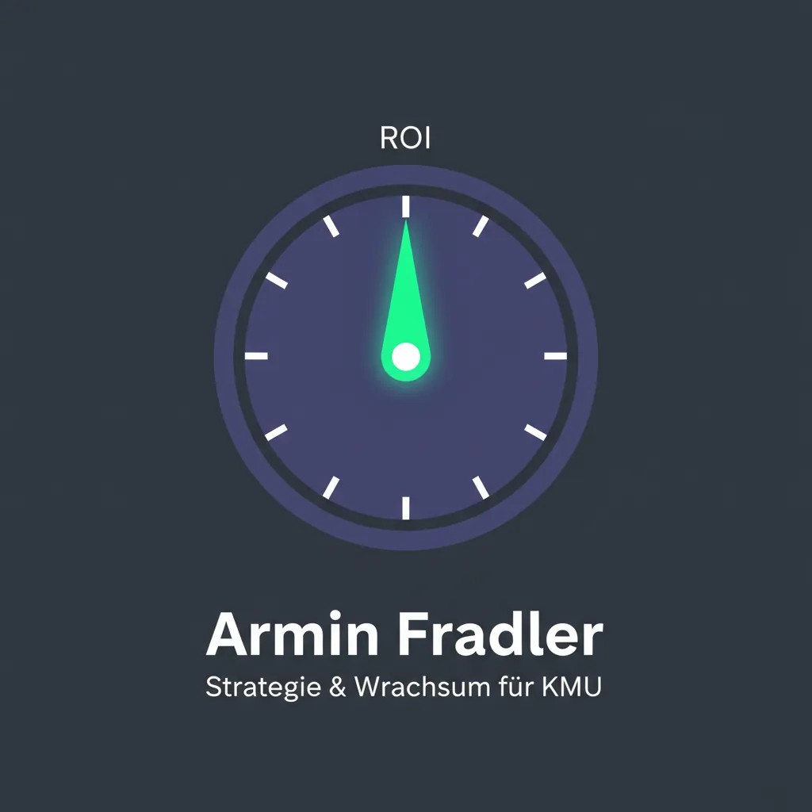

Automatisierung · · 7 Min.
Der 100-Euro-Mitarbeiter: Was KI für österreichische KMU wirklich leistet
Aus dem Archiv: Dieser Beitrag ist vor über einem halben Jahr erschienen. Manche Zahlen und Produktnamen haben sich seither geändert.

Ein Mitarbeiter kostet Sie 276 Euro pro Arbeitstag. Ein KI-Assistent kostet 100 Euro im Monat. Die Rechnung, die niemand aufmacht.
Das Wichtigste in Kürze
- Ein Mitarbeiter mit 3.200 € Brutto kostet den Arbeitgeber 58.000 € pro Jahr – das sind 276 € pro Arbeitstag
- KI-Tools wie ChatGPT Team oder Claude Pro kosten 20-30 € pro Nutzer und Monat
- Laut Adecco-Studie sparen Beschäftigte durch KI 113 Minuten pro Tag – fast zwei Stunden
- Die IBM-Studie "Race for ROI" zeigt: 62% der deutschen Unternehmen erzielen bereits messbare Produktivitätssteigerungen
- KMU haben Aufholbedarf: Nur 50% berichten von Effizienzgewinnen, bei Großunternehmen sind es 72%
Wenn ich Geschäftsführern die Frage stelle, was ein Mitarbeiter kostet, höre ich meistens das Bruttogehalt. Manchmal noch "plus die Lohnnebenkosten". Selten die echte Zahl.
Die echte Zahl ist: Ein Mitarbeiter mit 3.200 Euro Bruttogehalt kostet Sie als Arbeitgeber etwa 4.850 Euro im Monat. Das sind knapp 58.000 Euro im Jahr. Und wenn Sie das durch die tatsächlichen Arbeitstage teilen – nach Urlaub, Feiertagen, Krankenstand – landen Sie bei 276 Euro pro Tag, an dem dieser Mitarbeiter tatsächlich arbeitet.
Ein KI-Assistent kostet 100 Euro im Monat.
Was kostet ein Mitarbeiter wirklich?
Bei einem Bruttogehalt von 3.200 Euro monatlich ergeben sich laut Enzinger Steuerberatung folgende Gesamtkosten für den Arbeitgeber: 14 Monatsgehälter, Sozialversicherungsbeiträge, Kommunalsteuer, Dienstgeberbeitrag und weitere Abgaben summieren sich auf etwa 58.000 Euro jährlich.
| Komponente | Betrag |
|---|---|
| Bruttogehalt (14×) | 44.800 € |
| Lohnnebenkosten (~30%) | 13.400 € |
| Gesamtkosten/Jahr | ~58.000 € |
| Kosten/Monat | ~4.850 € |
| Kosten/Arbeitstag | ~276 € |
Die Berechnung pro Arbeitstag berücksichtigt: 260 Arbeitstage minus 25 Urlaubstage, 13 Feiertage und durchschnittlich 11 Krankenstandstage. Das ergibt 211 effektive Anwesenheitstage.
Was kostet KI im Vergleich?
Die gängigen KI-Assistenten für Unternehmen kosten zwischen 20 und 100 Euro pro Nutzer und Monat:

| Tool | Kosten/Monat | Besonderheit |
|---|---|---|
| ChatGPT Plus | 20 € | Einzelnutzer |
| ChatGPT Team | 25 € | Teamfunktionen, besserer Datenschutz |
| Claude Pro | 18 € | Längere Kontexte |
| Microsoft Copilot | 28 € | Office-Integration |
| Lokale Lösung | ~100 € | Einmalig 5.000-10.000 €, dann minimal |
Bei 20 Mitarbeitern mit ChatGPT Team: 500 Euro im Monat. Das entspricht weniger als zwei Arbeitstagen eines einzelnen Mitarbeiters.
Was die meisten übersehen: Die falsche Rechnung
Die typische Diskussion über KI-Produktivität läuft so: "KI spart Zeit." Dann kommt die Gegenfrage: "Wie viel Zeit?" Dann wird es vage.
Laut Adecco-Studie "Global Workforce of the Future" sparen deutsche Beschäftigte durch KI-Nutzung im Schnitt 113 Minuten pro Tag – fast zwei Stunden.
Aber hier beginnt das Problem: Ein Drittel der Mitarbeiter verbringt diese gewonnene Zeit mit denselben Tätigkeiten wie zuvor. Die Zeit wird gespart, aber nicht umgewidmet.
Gartner bestätigt: KI bietet etwa 5,7 Stunden Zeitersparnis pro Mitarbeiter und Woche – aber nur 1,7 Stunden davon führen zu höherwertiger Arbeit.
Das ist der entscheidende Punkt: Die Frage ist nicht, ob KI Zeit spart. Die Frage ist, was mit dieser Zeit passiert.
Wie berechne ich den echten ROI?
Der Return on Investment von KI hängt davon ab, wie Sie die gewonnene Zeit nutzen. Hier eine realistische Rechnung für ein KMU mit 10 Mitarbeitern:
| Faktor | Konservativ | Optimistisch |
|---|---|---|
| Zeitersparnis/Tag/Person | 60 Min | 113 Min |
| Davon produktiv genutzt | 30 Min | 60 Min |
| Arbeitstage/Monat | 18 | 18 |
| Gesparte Stunden/Monat (Team) | 90 h | 180 h |
| Wert (bei 35 €/h) | 3.150 € | 6.300 € |
| KI-Kosten (10 Nutzer) | 250 € | 250 € |
| Netto-Gewinn/Monat | 2.900 € | 6.050 € |
Der Break-Even liegt bei dieser Rechnung im ersten Monat. Bei 5.000 Euro Initialkosten für Setup und Schulung: nach zwei Monaten.
Wo bringt KI am meisten?
Laut IBM-Studie "Race for ROI" sind die Bereiche mit den größten Produktivitätssteigerungen:
| Bereich | Anteil mit Steigerung |
|---|---|
| Softwareentwicklung/IT | 36% |
| Kundenservice | 32% |
| Account-Management | 29% |
Die Erfahrung zeigt, dass die größten Gewinne typischerweise bei folgenden Bereichen liegen:
- E-Mail-Bearbeitung: 50% schneller bei gleichbleibender Qualität
- Dokumentenerstellung: Angebote, Protokolle, Berichte in der Hälfte der Zeit
- Recherche: Von 30 Minuten auf 5 Minuten für die meisten Fragen
- Übersetzungen: Sofort statt Warten auf Dienstleister
Was funktioniert weniger gut: Kreative Kernleistungen, komplexe Verhandlungen, Beziehungsaufbau. Dort bleibt der Mensch überlegen.
Der Kontext: Warum das jetzt wichtig ist
Diese Rechnung ist nicht nur eine theoretische Spielerei. Sie ist die praktische Antwort auf ein strukturelles Problem.
[Der Personal-Crunch](/blog/personal-crunch-arbeitskraeftemangel-automatisierung) zeigt: 67% der österreichischen Mittelständler sehen den Fachkräftemangel als größtes Wachstumsrisiko. Ein Drittel verliert bereits Umsätze wegen fehlender Mitarbeiter.
Die Rechnung verschiebt sich: Es geht nicht mehr darum, ob KI billiger ist als ein Mitarbeiter. Es geht darum, dass Sie den Mitarbeiter nicht finden – und KI die einzige verfügbare Option ist, um die Lücke zu füllen.
Warum KMU trotzdem hinterherhinken
Die IBM-Studie zeigt eine klare Diskrepanz: Während 72% der Großunternehmen von Produktivitätssteigerungen berichten, sind es bei KMU mit unter 250 Mitarbeitern weniger als 50%.
Die Gründe, die ich in meiner Arbeit sehe:
| Hindernis | Lösung |
|---|---|
| Keine klare Strategie | Erst Prozesse definieren, dann Tool wählen |
| Fehlende Schulung | Minimum 2 Stunden Grundlagentraining pro Mitarbeiter |
| Datenschutz-Bedenken | Lokale Lösungen oder EU-konforme Anbieter |
| "Wir machen das schon immer so" | Pilotprojekt mit einem Team starten |
Das größte Hindernis ist nicht die Technik. Es ist die Frage: Wofür nutzen wir die gewonnene Zeit?
Die richtige Frage stellen
Wenn ich mit Geschäftsführern spreche, stelle ich nicht die Frage "Wollen Sie KI einführen?" Ich frage: "Wenn jeder Ihrer Mitarbeiter morgen zwei Stunden mehr Zeit hätte – was würden Sie damit anfangen?"
Die Antworten sind oft:
- "Endlich die Kundenpflege, die immer liegen bleibt"
- "Die Projekte fertigstellen, die seit Monaten warten"
- "Weniger Überstunden für alle"
KI ist kein Ersatz für Mitarbeiter. KI ist ein Werkzeug, das Mitarbeitern ermöglicht, sich auf das zu konzentrieren, wofür Sie sie eigentlich eingestellt haben.
Was Sie konkret rechnen können
Für eine erste Einschätzung brauchen Sie drei Zahlen:

- Ihre tatsächlichen Personalkosten pro Stunde: Jahresgehalt × 1,3 (Lohnnebenkosten) ÷ 1.700 (effektive Arbeitsstunden)
- Geschätzte Zeitersparnis: Konservativ 30 Minuten pro Tag und Mitarbeiter
- KI-Kosten: 25 Euro pro Nutzer und Monat für Cloud, 100 Euro pro Nutzer einmalig für lokale Lösung
Bei einem Mitarbeiter mit 3.200 Euro Brutto:
- Personalkosten/Stunde: ~34 Euro
- Zeitersparnis/Monat: 9 Stunden (30 Min × 18 Tage)
- Wert der Zeitersparnis: 306 Euro
- KI-Kosten: 25 Euro
- Netto-Gewinn: 281 Euro pro Mitarbeiter und Monat
Das ist die konservative Rechnung. Die PwC-Studie zeigt, dass in KI-affinen Branchen das Produktivitätswachstum viermal höher liegt als in anderen Bereichen.
Der nächste Schritt
Die Frage ist nicht, ob sich KI für Ihr Unternehmen lohnt. Bei diesen Zahlen lohnt sie sich fast immer. Die Frage ist: Wie stellen Sie sicher, dass die gewonnene Zeit auch produktiv genutzt wird?
Das erfordert drei Dinge:
- Klare Ziele: Was sollen Mitarbeiter mit der gewonnenen Zeit tun?
- Richtige Schulung: Nicht nur wie das Tool funktioniert, sondern welche Aufgaben sich eignen
- Passende Infrastruktur: Cloud oder lokal, je nach Datenschutz-Anforderungen
Wenn Sie darüber nachdenken wollen, wie das für Ihr Unternehmen konkret aussehen könnte – ich nehme mir gerne Zeit für ein Gespräch.
→ [In 15 Minuten klären, ob das für Sie relevant ist](/kontakt)
Weiterführende Artikel
- [Der Personal-Crunch wird nicht vorbeigehen](/blog/personal-crunch-arbeitskraeftemangel-automatisierung) – Warum KI jetzt unvermeidlich wird
- [Wem gehören die Daten?](/blog/ki-souveraenitaet-schatten-ki-oesterreich-2025) – Warum Datenschutz bei KI-Nutzung kritisch ist
- [Das Schleusen-Prinzip](/blog/schleusen-prinzip-cloud-ki-hybrid) – Wann Cloud-KI, wann lokal?
- [Warum die meisten KI-Projekte scheitern](/blog/ki-projekte-scheitern-change-management-vertrauen) – Und wie die 5% Erfolgreichen es anders machen
Quellen:
- Enzinger Steuerberatung (Juni 2025): Personalkosten für Arbeitgeber in Österreich
- karriere.at (2025): Lohnkostenrechner Österreich
- IBM (Oktober 2025): "The Race for ROI" – EMEA-Studie mit 3.500 Führungskräften
- Adecco (2025): "Global Workforce of the Future" – Zeitersparnis durch KI
- PwC (2025): AI Jobs Barometer – Produktivitätswachstum durch KI
- Gartner (2025): KI-Zeitersparnis und produktive Nutzung
- Haufe (Oktober 2025): KI spart Zeit, steigert aber nicht automatisch Produktivität
Armin Fradler begleitet Bildungsorganisationen und Teams beim Umgang mit KI und unterrichtet selbst in der Erwachsenenbildung.